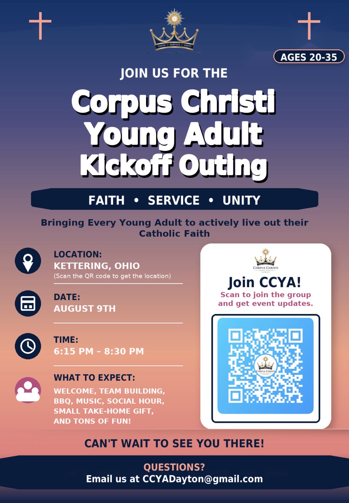
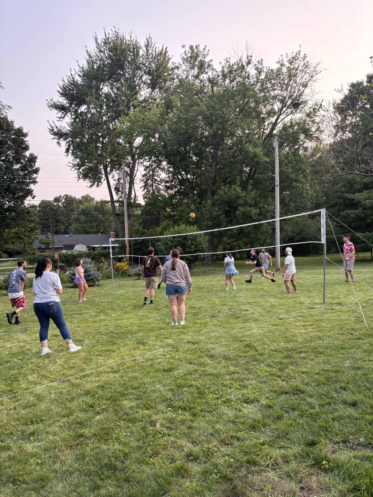
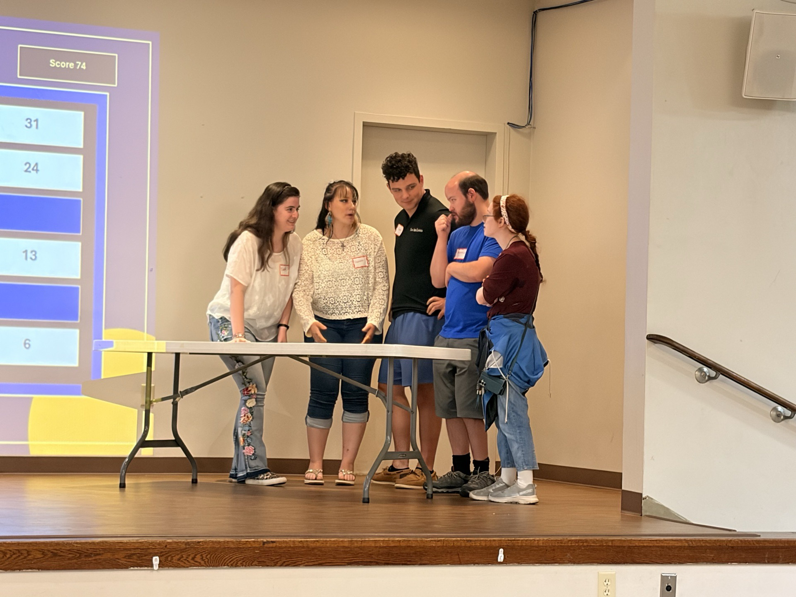
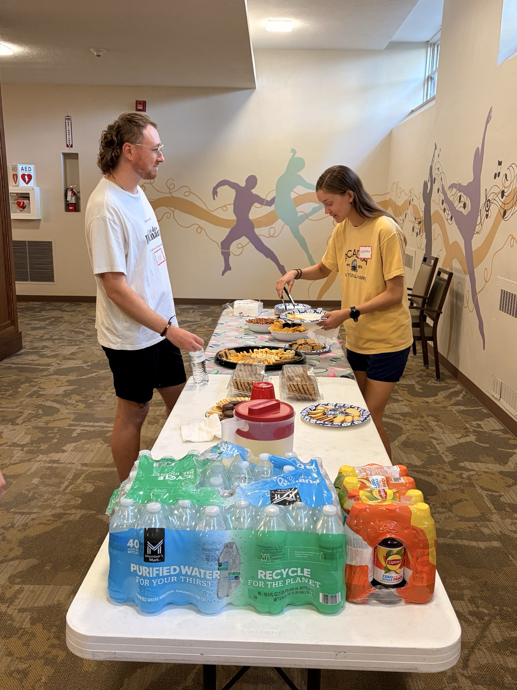
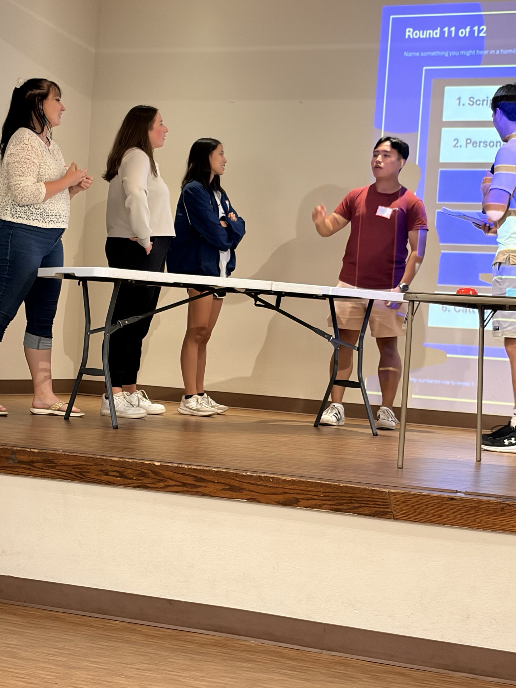
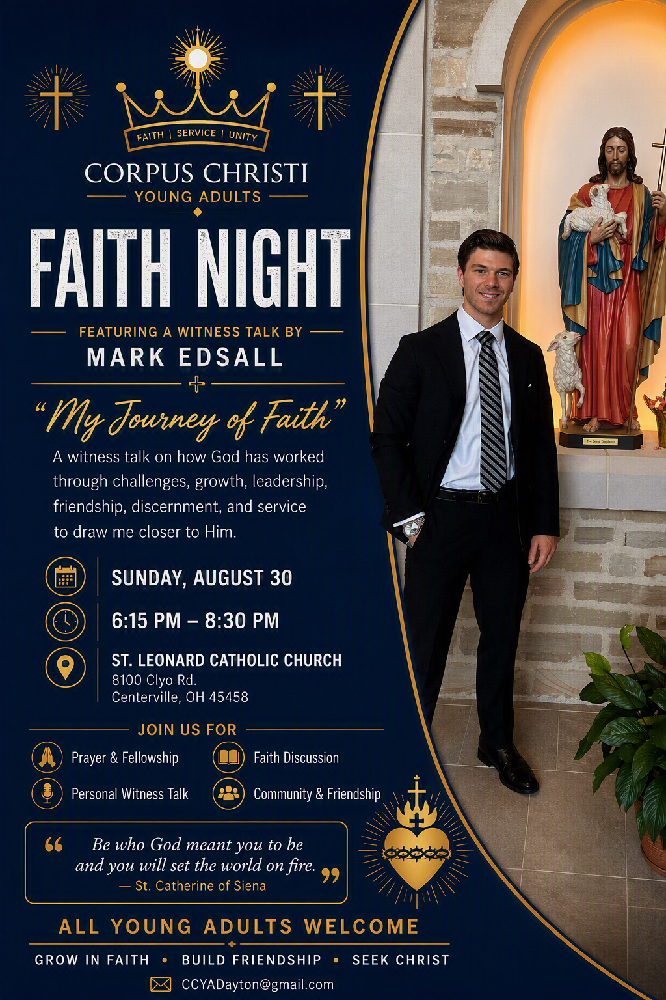
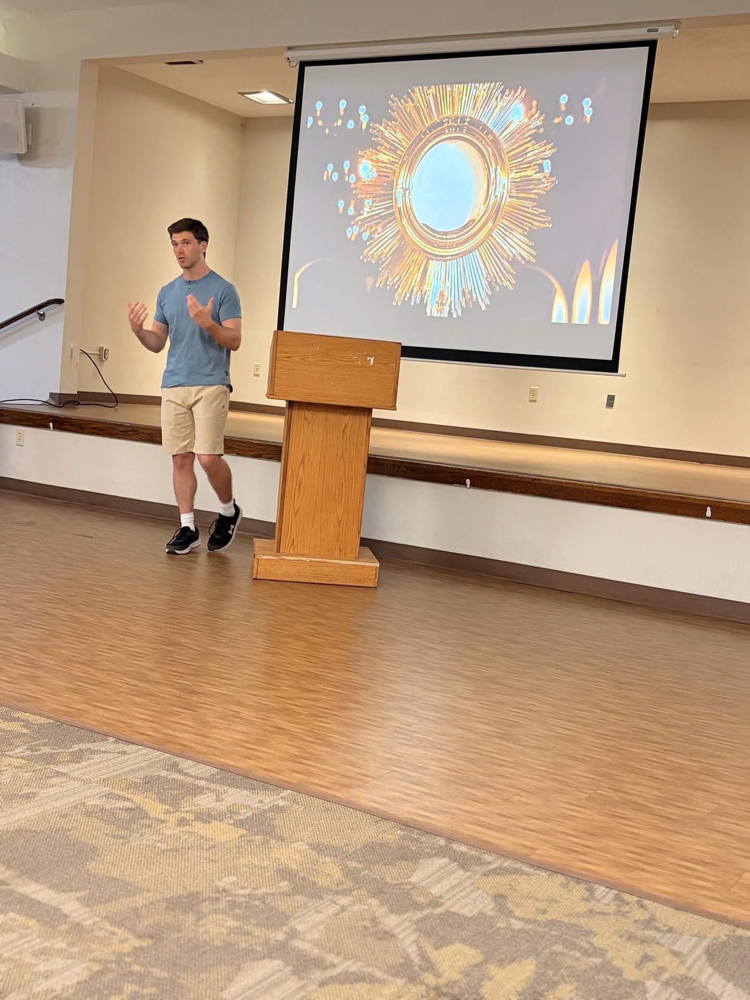
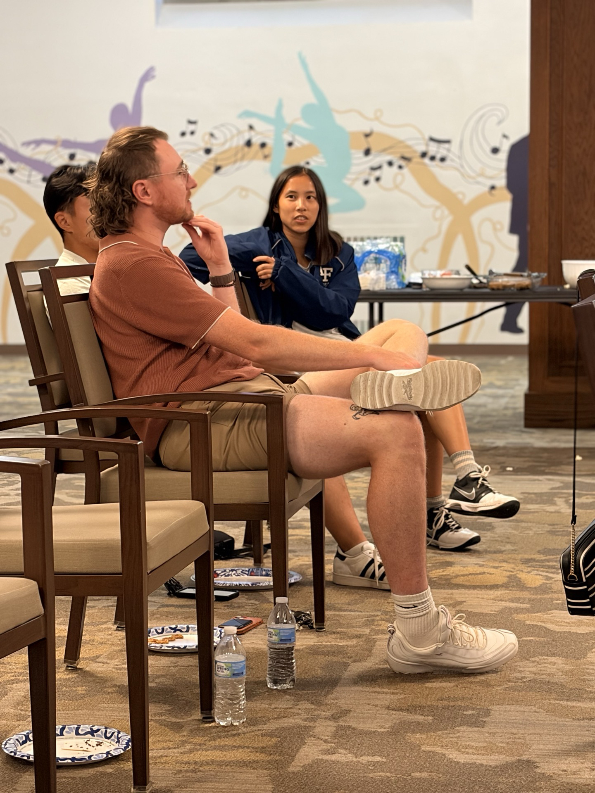

Faith.
Service.
Unity.
A Catholic community for young adults ages 20–35 in the Dayton area. Grow in faith, build authentic friendships, serve others, and draw closer to Christ.
Join CCYA@ccyadaytonBuilt for real Catholic community.
Corpus Christi Young Adults creates consistent opportunities for young adults to deepen their faith, ask meaningful questions, meet new people, and actively live out Christ’s call.
Faith
Prayer, formation, Scripture, Catholic teaching, reflection, and discipleship.
Service
Living out the Gospel through practical service to parishes and the Dayton community.
Unity
Social events, activities, and intentional fellowship that build lasting friendships.
Events that build community.
CCYA brings together faith nights, social events, active outings, team building, and service opportunities.

Life at CCYA.
Photos are displayed in the exact order provided, beginning with the join code and event flyers, followed by community activities and faith-night moments.







Leadership Team.
President
Vice President
Treasurer & Fundraising
Recruiting & Social Media
Get connected.
Follow CCYA for event announcements and photos, or email the group for joining information.
Follow @ccyadaytonEmail CCYA